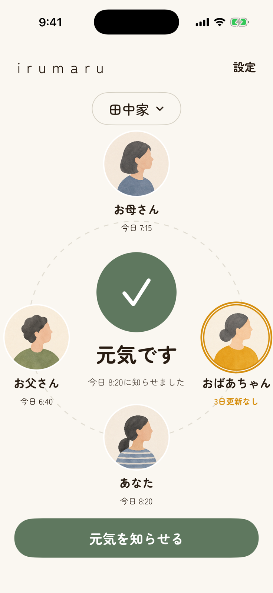
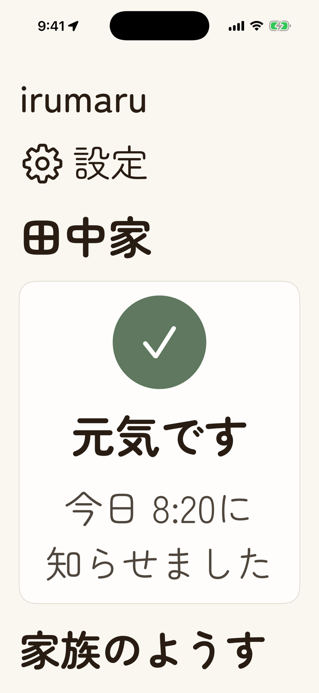
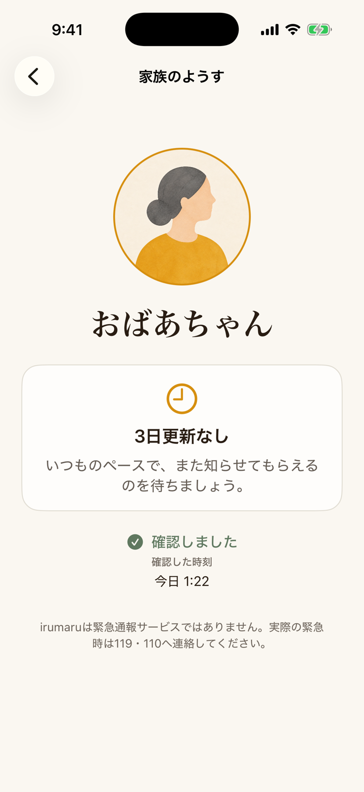

ワンタップで更新
大きなボタンを押すだけで、グループへ今日の元気を知らせます。
irumaru
イルマル
GENTLE CIRCLE · 暮らし
離れて暮らす家族や友人が、1日1回の短い更新で元気を伝え合う、監視しない見守りアプリです。



大きなボタンを押すだけで、グループへ今日の元気を知らせます。
名前、アバター、最終更新時刻だけを静かなサークルで確認できます。
本人へのリマインド後、設定した期間を過ぎた場合にメンバーへ知らせます。
居場所や健康データを収集せず、更新がないという事実だけを扱います。
Made for you